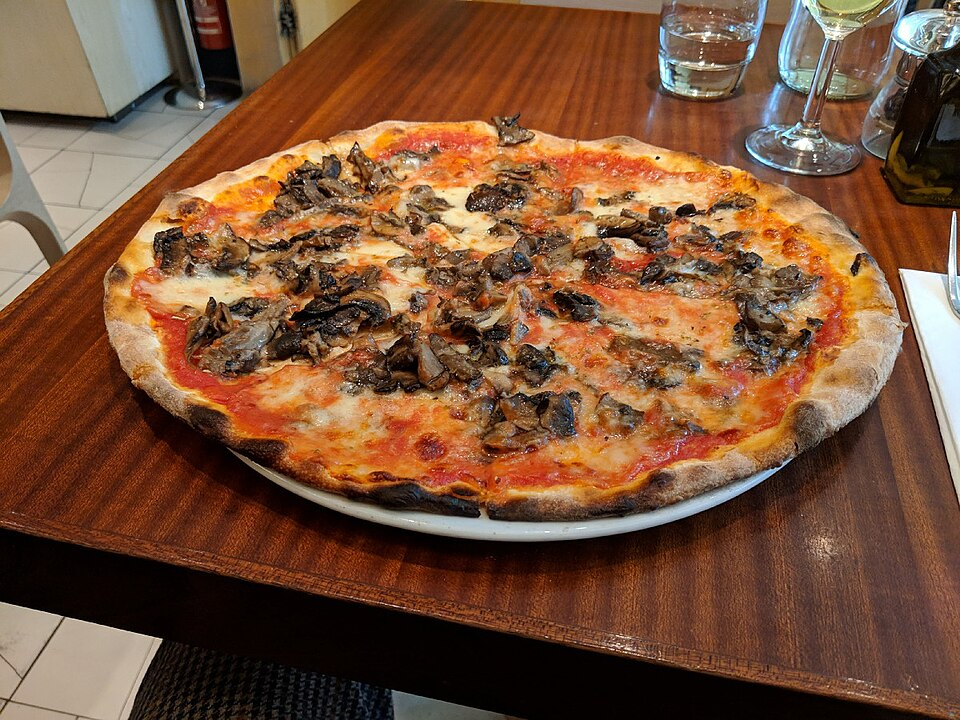

Inclusive Latinx Heritage
As an Afro-Latino and Latinx-owned enterprise, Salud weaves cultural pride into every detail—from our Mexican lagers brewed with maize to our Latin Lingo pizzas and community arts showcases.
What started in 2012 as an indie bottle shop has grown into one of North Carolina’s most important culinary and cultural institutions. Founders Jason and Daria Glunt created Salud to be more than a brewery—it is an inclusive community gathering space honoring Latinx roots, hip-hop culture, and hospitality excellence.

Groundbreaking beer, authentic representation, and genuine hospitality.
As an Afro-Latino and Latinx-owned enterprise, Salud weaves cultural pride into every detail—from our Mexican lagers brewed with maize to our Latin Lingo pizzas and community arts showcases.
Honored with multiple James Beard Foundation Outstanding Bar Program semifinalist nominations and voted the #1 Beer Bar in America three times by USA Today 10Best readers.
From morning drip coffees and cortados to wood-fired lunchtime pizzas and late-night weekend draft lines, our doors are open to every neighbor, visitor, and friend in Charlotte.